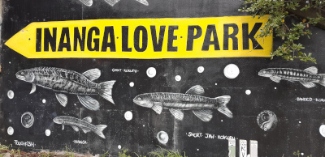
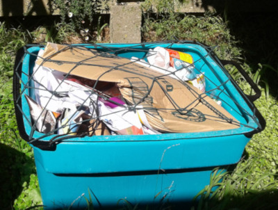
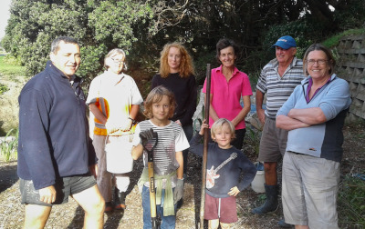

NEWS & UPDATES
Working Bee at Korokoro Stream
Sunday, September 30th 2018We're planning another working bee for 30th at Inanga Love Park on the banks of the lower reaches of the Korokoro Stream. Contact Daniel if you're interested.
Great Kereru Count
September 21st-30th 2018The Great Kererū Count is NZ’s biggest citizen science project to help gather information on the abundance and distribution of the New Zealand pigeon — also known as kererū, kūkū or kūkupa.
Everyone in New Zealand can get involved with the Great Kererū Count, whether you see any kererū or not, sharing your observations will help build up a clearer picture of where the kererū live, how many there are and what they are feeding on.
See www.greatkererucount.nz for details.
Petone Railway Corridor Clean Up
Sunday, September 23rd 2018There's a clean up day for the railway corridor in Petone on the 23rd. Details to follow.
Hutt Valley-Wellington Whaitua Committee
August, 2018GWRC are now recruiting community members for the Hutt Valley-Wellington Whaitua Committee. Their website describes the remit of the committee in the following terms:
The Hutt Valley-Wellington Whaitua Committee, will be a group of local people tasked with researching and recommending tailored solutions for water issues in the catchment. Encompassing Hutt Valley, Makara, Wainuiomata, and Wellington City, the catchment is large and home to diverse communities with unique relationships to water. The committee will need public input to ensure the solutions they develop are going to work for our environment and all of those who call the whaitua home.
So if you or someone you know who is passionate about safeguarding and restoring our waterways you may want to consider applying. There is plenty of information about what being a committee member would involve on the GWRC website. However, if you would like more of a personal perspective then contact Daniel who can put you in touch with a member of the Porirua Committee, which has been up and running for a couple of years.
See the GWRC website for details of how to apply. Applications close 4th September.
Petone-to-Grenada Update
August, 2018NZTA have issued an update on the proposed road.
Report from Working Bee at Inanga Love Park
Sunday 5th August, 2018Inanga Love Park is where the Korokoro Stream passes under SH2 and the railway before entering the harbour.
Many thanks to those who came and helped at our working bee. We did a lot of weeding and some planting. The following weekend our friends from the Growing Places Trust went back and did some more planting.
We now need to plan a further working bee to paint the new mural, weed further and plant the additional plants that the Council are providing. After that we will have to sort out a regular schedule of light management in order to keep the weeds at bay.
154 Bus Service
July, 2018Korokoro now has a bus service on Saturdays! The 154 bus service now runs 12 times on Saturday at hourly intervals.

Some handy 154 tips:
- Most 154 services are timed to connect at Petone station with trains both to and from Wellington
- Pay by Snapper and transfer to the 154 from another bus anywhere on its route and your ride up the hill is free (because the 154's route is all in fare zone 4 - even for the services which go to Lower Hutt on school days)
- The last bus up the hill on weekdays is now at 6:31pm which means it is free is you have a SuperGold card (the last bus on Saturday at 6:55pm is too!)
KEG Meeting
1st July, 2018A KEG meeting was held on Sunday 1st July. Read the minutes for details of what was discussed.
Hutt City Council Long Term Plan
May 2018Hutt City recently ran a consultation on its Long Term Plan for 2018–2028. Julie presented our submissions to the Mayor and Councillors at a public meeting in the Council Chambers on 16th May 2018.
School garden
May 2018Thanks to the team of volunteers who have been helping to get the school garden in order. We held a working bee in late May to do some work on the new beds and put up a shade-house.
Second working bee at Korokoro Stream
May 2018Thanks for all those who have volunteered for this second working bee on the stream. A slight delay in sourcing new plants has meant that we have put this off until early June.
May pest monitoring
May 2018Paul will be out this weekend with the team of volunteers, helping monitor mustelid, rodent and hedgehog numbers in Korokoro Valley. GWRC’s reports on the May pest monitoring in the region’s Key Native Ecosystems will go on up on the website when it is received.
Community Bee Hives in Korokoro
May 2018Lower Hutt Charity, the Common Unity Project, have agreed to come up to Korokoro in the next couple of weeks to check out a couple of sites to see if they are suitable for communal bee hives. In the event that they report on suitable sites we will discuss whether to support the Project and host the hives at the next KEG meeting.
The latest threat to Korokoro Valley from the Petone-to-Grenada Road
April 2018Before Christmas the latest NZTA evaluation into the P2G was published. Following the Kaikoura and Wellington earthquakes the evaluation report looked at resilience and the expected costs, benefits and environmental impacts. The project evaluation queried the resilience of the preferred option and suggested that costs would be much higher than first anticipated. It also highlighted that the environmental impacts could be difficult to mitigate. The good news is that the evaluation recommends abandoning the current route; the bad news is it recommends consideration of discarded options including that of using the Korokoro Valley as a route.
KEG wrote to Minister Twyford in mid January 2018. We advocated that NZTA be steered towards more sustainable options, saying that there were good alternative ways of improving connectivity and calling on the minister to replace the discredited approach of tackling congestion through increased roading with a strategy that focusses on intelligent public and haulage transport, improved facilities for cycling and walking and public planning to reduce car use across the region. In early April the Minister responded.
We encourage you to actively oppose building a road through the Korokoro Valley.
Nets for Recycling Bins
April 2018As we head further into autumn we face the prospect of rubbish being blown all over Korokoro from open recycling bins. The solution is for as many people as possible to use the nets which go over the bins.
The Council have kindly provided us with lots of nets, at a reduced rate. If you or your neighbours need any please contact Daniel Jones and we will drop some round. (A contribution of $5 per net to help us cover our costs would be appreciated).
Working Bee at Korokoro Steam
April 2018Volunteers from KEG, with help from the Growing Places charity, spent the afternoon of Sunday 1st April weeding, planting and tidying at Inanga Love Park, at the mouth of the Korokoro Stream.
The Inanga Love Park was part of 2016 Common Ground Festival. It involved restoring the unloved section of the Stream between the culvert and the sea by removing the rubbish, establishing plant-cover to help spawning native fish and creating a series of posters about the stream and its ecology.
The original plants did not thrive over the long, hot summer and the posters were starting to look tatty. So, we have cleared some weeds, done some more planting and taken the posters down.
New posters are being created. Once they are ready we will put them up and continue with the planting.
Korokoro School Gala Fair
March 2018KEG had a stall at this year’s school gala to help raise money for the school, but we also helped reduce the waste created by the gala itself by organising compost and recycling bins and provide stall holders with suggestions for reusable/recyclable products and packaging.
With plenty of people using the bins and a reduction in the use of plastics and clingfilm this was a big step in the right direction. It was not ‘zero waste’ but we now have enough know-how to help Home and School run a genuine zero waste event next time round.
Pest Monitoring Report
February 2018Four times each year KEG volunteers check pest monitoring tunnels in the Korokoro Valley and report results to Greater Wellington Regional Council. Korokoro Valley has been identified as one of several Key Native Ecosystems (KNE) in the Wellington Region.
The Key Native Ecosystem programme aims to protect some of the best examples of native ecosystems in the Wellington region. It is working to achieve this by managing, reducing, or removing threats to their values. One of the primary threats to native plants and animals is introduced mammals, including rats and mustelids. Control of these pest animals is therefore undertaken at most KNE sites throughout the region. Regular monitoring is carried out to determine the effectiveness of these control efforts.
The latest pest monitoring event was in February. For Belmont-Korokoro that showed that rat tracking rates were on target, mice tracking was low, mustelid tracking was absent, but Hedgehogs were up by 33%. For more details, read the latest small mammal monitoring report.
KEG Meeting
28th January, 2018A meeting about P2G and other matters was held at the end of January. Read the minutes for this meeting for more details.
AGM
3rd December, 2017The KEG AGM was held on 3rd December. The new committee is:
- Chair: Julie Haggie
- Secretary: Daniel Jones
- Treasurer: Jenny Black
Thanks to the retiring committee members for their service.
The full minutes are available from this website.